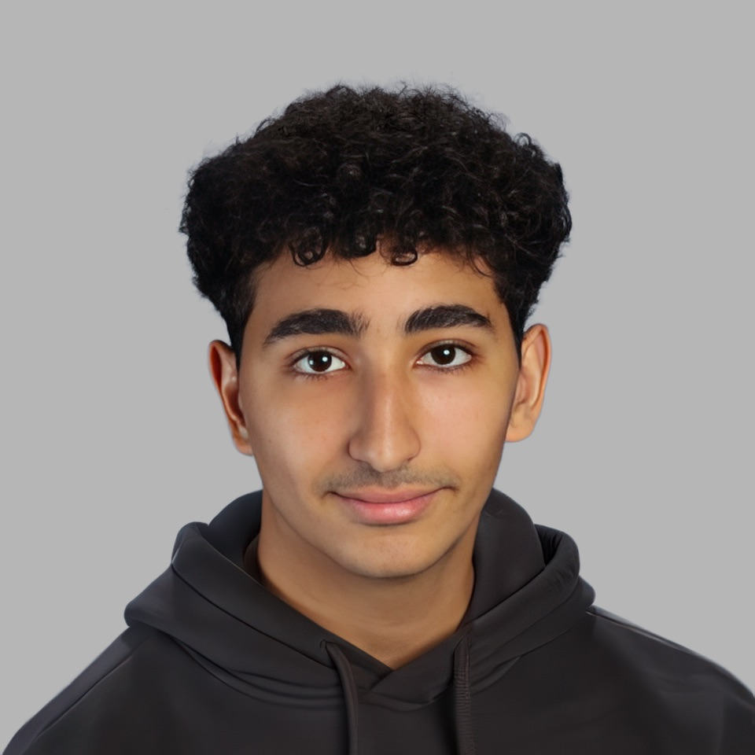
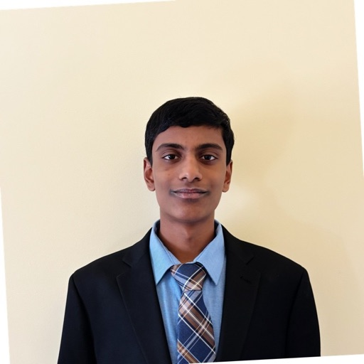

Aniketh Bandlamudi
President & CEO, Founder, Lead Developer, Apple Platforms & AI Strategy
Aniketh oversees both the technical and business sides of OCRadar to ensure the delivery of an
accessible, impactful, and polished product. He leads development across Apple platforms including
iOS, macOS, and iPadOS, while also architecting the computer vision model at the heart of
OCRadar’s technology. He founded OCRadar in 2022 to advance AI-driven early detection tools
and continues to drive its mission forward.
Lauren Kim
CFO, Director of Business Operations
Lauren manages the financial, nonprofit, and regulatory functions at OCRadar. She ensures the
business side runs smoothly, from compliance to outreach, while helping position OCRadar as a
responsible and mission-driven organization. She joined in 2024 to strengthen its foundation
as a sustainable, transparent, and socially impactful organization.

Malek Swilam
COO, Lead Developer, Android & Windows
Malek leads the development of OCRadar for Android and Windows, ensuring broad accessibility
and seamless performance across devices. He also played a key role in developing OCRadar’s
backend and computer vision model, bringing cross-platform integration and performance
optimization to the forefront of the product’s design. He joined in 2024.

Vishal Manikanden
Co-Founder, CTO, Microsoft Azure & Computer Vision Strategy
Vishal joined OCRadar in 2024, developing the initial computer vision model using Microsoft
Azure Custom Vision. His work helped demonstrate the project’s feasibility and continues to
support the technical mission of OCRadar, bringing fast and reliable detection to our
applications.